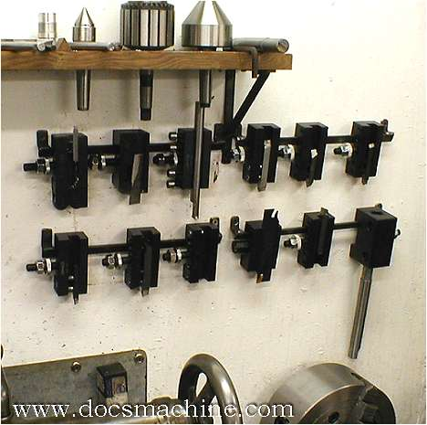
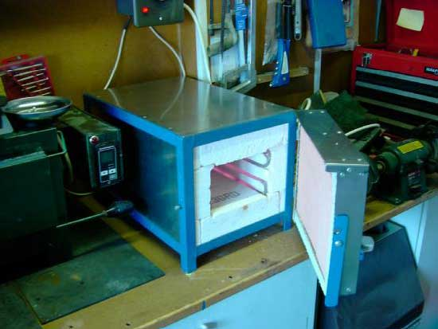

CNC Workshop Projects
Workshop Project Wish List
|
Turned File Handles and
Rack
I came across
these beautiful turned file handles on the Lathemaster
Yahoo Group. A fellow named Marv Stovall did them. I thought
they were really nice, and immediately wanted a set for myself.
This will make a good project to try my CNC
Lathe on when I get done converting it.
At the same
time, I'd love some kind of rack to make it easy to organize the
files. You need a collection of different styles, shapes, and sizes,
and it's hard to keep them all neat. According to Guy Lautard, he
knows a guy that keeps his in pipes filled with heavy cutting oil.
I have found that the heavy oil works as good or better than chalk
to keep files from loading up, and it would surely protect them.
BTW, I like
Nicholson files. For filing on the lathe, there's nothing like their
lathe pattern file either. makes for some really smooth work.
In the meanwhile,
I bought a box of cheap wooden handles off eBay for my files, which
are way better than nothing.
|
Lathe QCTP Toolholder Rack
So many great ideas I
started an Idea Notebook page for this one. Here is a typical sample from the Lathe Tooling Organization
page:

|
Bearing
Greaser
Here's
a neat little bearing greaser Bogstandard
showed over on the HMEM boards:
Zerk for
grease gun is on top. Just use the hand gun, not a pneumatic or
there is a danger of bending the shield!
I had
an idea for some fixtures to
help with preloading bearings. Perhaps a multi-purpose fixture
could be created, I'll have to ponder that.
|
Bench Tapping
Fixture
A bench tapping fixture...
This little
gadget would be handy to have around for precision tapping a hole
straight up and down and would not be hard to make. I'm saving
it for an early CNC project once my machines are converted.
|
Harbor Freight
Tool Grinder and Goodies
Lots of folks feel this inexpensive
tool and carbide grinder is a great buy and a must-have for
the home shop. Mine has performed extremely well right out of the
box. I even went quite a ways with the relatively low quality wheels
that came with it.
I've included some pictures
and comments about accessories people have made for it as well:
A
diamond dressing attachment...
A
mitre attachment...
Recommended
wheels:
The wheels
for this grinder are 6" diameter and 1 1/4" arbor.
Diamond
220 grit from Enco: Got it just the other day!
Aluminum
Oxide 46 Grit from J&L: I'm gonna run the wheels that came
with the grinder for a little while and see how they do.
More
Attachments and Tune Ups
These are
from Jim Hubbell. Balancing new wheels:
XY Table
with sensitive feed and lathe tool universal vise:
|
Tool
and Cutter Grinder
I've been keeping my nose to the
ground looking for ideas on a tool and cutter grinder. It's ridiculously
easy to dull a cutter, and while they're reasonably cheap on eBay
(say $10 for a nice US Made 1/2" endmill), it's even cheaper
to sharpen them. Not to mention drill bits need constant sharpening,
and custom cutters are easily made with the right grinder. I've
looked a little bit at the Deckel's and their clones that come up
on eBay, but they want an awful lot of money for one. Then there
are a variety of cutter grinders that various HSM's have made over
the years. These look like fascinating projects that would be great
fun to undertake!
Here is my take on how to create
a Deckel clone from an inexpensive Harbor Freight Tool Grinder and
a "Universal Vise" acquired on eBay:
I call it the "Beijing Deckel"...
|
Sheet Metal Fabrication Tools
In fact, the whole sheet
metal tool arsenal would be handy to have at hand. An English wheel,
slip rolls, etc., etc.. I did come across some photos of this beautiful
pan and box brake, which was built based on an article in "Projects
in Metal." I ordered their book so that I would have these
plans available when I'm ready to jump in. The article in the book
is excellent, and there are a number of other projects to covet
there as well (like the precision cutter grinder and tilting table
for milling). Order "Metalworking, Book Two, The Best of Projects
in Metal." This particular brake was designed by Glenn Wilson.
Very nice, eh?
There's
a fellow on one of the boards who has an interesting wrinkle on
this stuff. He's built a hydraulic press with a tubing bending attachment
that is CNC controlled. Basically, you enter an angle, step on the
pedal, and the machine bends the tubing to that angle. You could
imagine that the electronics involved must be simple. A PIC controller,
an encoder for shaft position (to measure how many degrees we have
gone), and some sort of solenoid valve for the hydraulic cylinder.
It's interesting to consider whether some of these other bending
tools could be so equipped in order to make it easy to produce repeatable
operations to a particular design spec. I'd have to think it is
very possible. The same fellow suggests that the expensive part
in all of this is the hydraulic pump, and that if one were to build
such tools one should use quick disconnects to share that pump with
several machines and thereby lower the overall costs. Good idea!
Update:
I have now purchased a 45 ton air-over-hydraullic press, so I'll
likely look to make a press brake attachment.
One more possibility is to build an electromagnetic sheet metal brake, similar to a MagnaBrake. Check out my page for ideas.
|
Shop
Cranes
Warning: Heavy lifting is inherently
a very dangerous business. Injuries and property damage are common.
Make sure you know exactly what you're doing before attempting something
like this!
This one seems endlessly
useful around the shop. There's always something big and heavy to
be moved or repositioned. By making it out of aluminum, it becomes
much easier for one person to assemble and disassemble or move around:
Using an aluminum gantry crane to move a mill
into position...
Close-up of the I-Beam Support...
Travelling gantry would be very helpful building
my Texas Smoker!
|
Machinery Dollys
An alternative to the
Gantry Crane would be a machinery dolly system like this one. Slide
the toe under and jack it up and you are ready to move. I could
envision making it so that one could attach a platform between two
dollies as well. Those pictured are very similar to a product called
"Rol-A-Lift"
that one could buy or rent if you didn't want to invest in making
a dolly system.
Moving in a Shaper...
|
Heat Treating
Oven
I have been interested in heat
treating metals for a long time, and finally sat down to do a
little web research on how to build a heat treat furnace. Industrial
PID controllers are readily available on eBay cheap, and the rest
of the materials required are not expensive either. Here is one
example of a shop made oven:

Shopmade
Heat Treat Oven...
It's also possible to convert a
ceramic kiln to this purpose. The ovens are typically lined with
fire brick, although I have also heard of some people using thermal
ceramic fiber blocks from a company called Vesuvius, and also
a material that comes in board form called "Marinite".
Other useful materials to know about include high
temp sodium silicate firebrick cement and refractory
mortar (found by yours truly while reading about pizza ovens).
Links about making your own
furnace:
The
Shopmade Heat Treat Oven Pictured Above: A nice project
with lots of photos.
http://www.knifeforums.com/forums/showtopic.php?tid/752668/post/775813/hl//:
Not much on pix, but some good tips and techniques. For example,
there is a high temperature mortar/calk available at Home Depot
to seal the bricks that is good to 2000 degrees. You want a "K"
type thermocouple for this kind of project.
HSM
Thread on Materials: OhioDeere has built some commercial heat
treating ovens and has some sage remarks there as well.
|
|

|
|
|